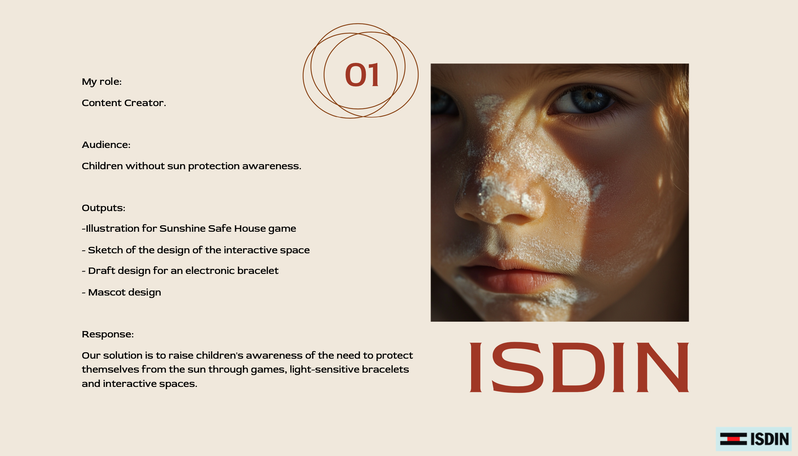
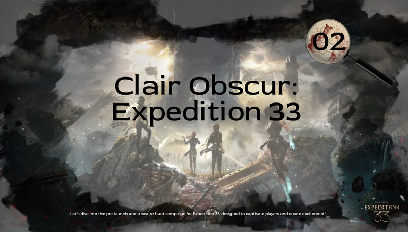
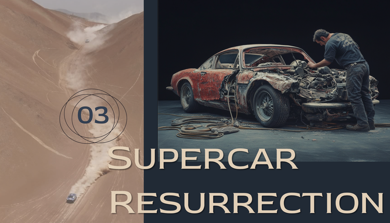
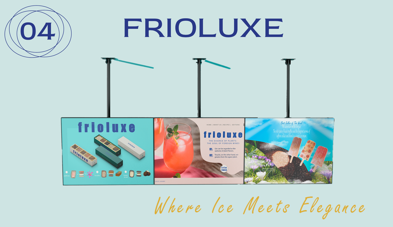

Here are my research projects and academic work. Want to know more? Email me.

This briefing outlines our work for the Student Service Design Challenge. We were given a choice of five brands and selected ISDIN. Our task was to design a skincare behaviour guidance service that was child-oriented, inclusive, adaptable to multicultural contexts, and encouraged long-term habit formation. The service needed to be easy to understand and use, while also enhancing children’s engagement through games, stories, or technology—helping them grow into advocates for their own skin health and that of their community. There were four of us on the team, but one male member was not actively involved and was absent on the final pitch day.
Read More
Situation: During the second week of the course, our group was given a second assignment: to design an integrated marketing plan for Kepler Interactive’s new release, Expedition 33. The task involved connecting celebrities, KOLs and brands to reach the target players through social media and influencers. Although the original team of three became a team of two due to the absence of one member, we quickly adjusted our division of labour to ensure the project progressed smoothly.
Read More
The third brief was to produce a reality television programme, Making it in Dubai. This is a reality show aimed at an international audience, designed to showcase Dubai's multiculturalism, innovation and global reach through young people from the UK taking part in business, arts, or major event challenges. The objective was to inspire interest in and recognition of the city’s diversity and potential for the future.
Read More
The fourth brief – the only independent one to be completed this term – was part of an annual challenge for the next generation of creative talent, initiated by the international creative agency JDO, aimed at inspiring visionary and impactful design thinking. The brief essentially required us to design a new snack brand for a pub.
Read More